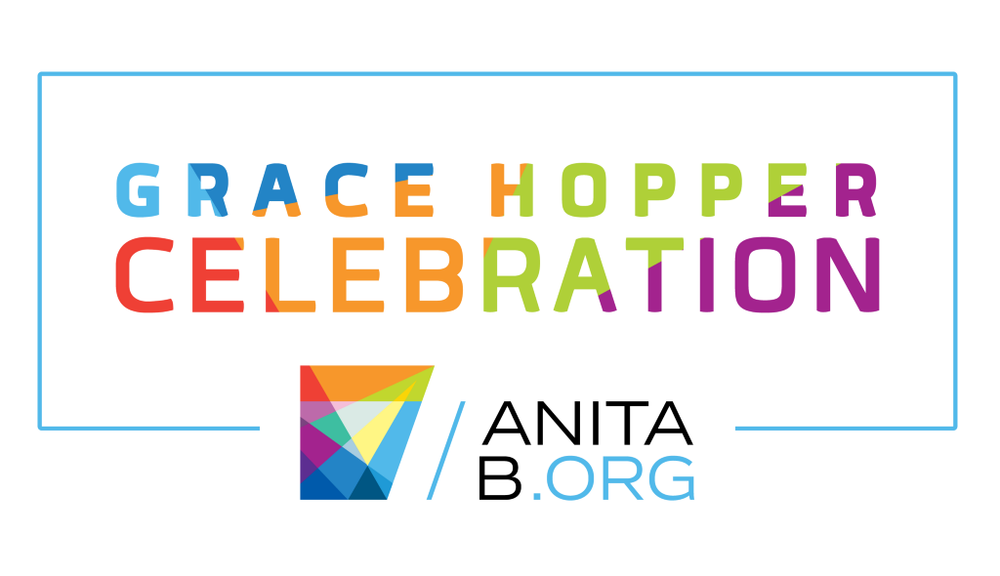

2019 WOMEN IN TECH CONFERENCES: OCTOBER
Check out these tech events happening in October that provide everything from product-building power hours to skills advancing and networking opportunities
Grace Hopper (Oct 2-4th)
The Grace Hopper Celebration has worked for 15 years to bring together the community of women technologists and raise awareness of the contributions of women in computing. The conference offers professional development for attendees by providing mentoring and collaborative proposals. Featured speakers talk about topics like Artificial Intelligence, Data Science, GFX, HCI, Security/Privacy and Software Engineering
The Women in Tech Summit (Oct 4th)

This conference is a combination of hands-on tech workshops, discussions about careers in tech and networking opportunities with other women in the technology field. The main goal is to inspire, educate and connect women in the women in tech industry.
Women of Color STEM Conference (Oct 11-13)

The Women of Color STEM Conference helps women improve their education and careers in science, technology, engineering and math fields. Our 20-year-old conference opens up many opportunities to achieve your STEM goals and aspirations. We see 20 percent of our attendees return yearly due to our many benefits.